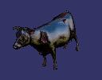
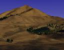
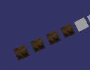
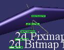
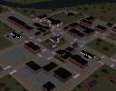
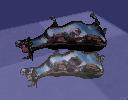
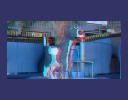
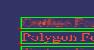
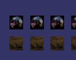

|  |
osgviewer cow.osg |
The scene graph viewer demo uses osgProducer::Viewer to bring up a basic
viewer. To find out what command line arguments it takes simply run osgviewer
without any arguments. To load a model simple run osgviewer filename.ext. The
osgProducer::Viewer provides an extensive set of operations that can be used
to display information about the loaded database such as performance stats,
through to output a snapshot of the screen, which is how these thumbnails
were created. For a full list of key presses and mouse interaction read
the osgviewer documentation. |
 |
osgviewer --stereo cessna.osg |
The scene graph viewer also supports anaglyphic, quad buffered, and
split screen stereo modes, for a full list of options and environmental
variables see the stereo documentation. |
|  |
hangglide |
The hang glide demo creates a simple flying site (Don Burns local hang
glide site in fact!), demonstrating how to create simple terrain, trees
and skydomes, and how to implement a simple flight camera manipulator to
allow the user to fly around. |
|  |
osgbillboard lz.rgb |
Demonstrates how to create the various types of billboard supported
by the OpenSceneGraph. Billboards are typically used for trees or particles
effects. |
|  |
osghud glider.osg |
Very similar to the basic osgviewer demo, but adds an orthographic projection
over the top of the main 3D view to create a head up display effect. Also
demonstrates how to use osgText. . |
|  |
osgimpostor Town.osg |
OpenSceneGraph is unique among scene graph in the fact that it supports
dynamically updated impostors natively, and this demo uses osgUtil::InsertImpostorVisitor
to traverse the loaded scene graph inserting osg::Importor nodes in place
of groups and LOD, so you can add Impostor into any of your own datasets!
The scene graph then takes over full responsibility for managing required
multistage rendering all dynamically at runtime, whilst keeping it neatly
encapsulated making it incredible easy to use. The Impostor support demonstrates
how powerful the multi-stage multi-pass rendering framework that the OpenSceneGraph
has, almost all other scene graphs have to hardwire such effects into them
and require significant application coding to do so. |
|  |
osgreflect cow.osg |
An example of how to set up planar reflections using the standard multi-pass
stencil buffer algorithm. This is all handled within the scene graph, so
there is no need to hardwire multi-pass effects into your own application.
. |
 |
osgscribe.cow.osg |
An example of how to decorate your scene graph geometry for useful
effects such as scribing. This demo uses two instances of your model, the
first one uses the state values set in your scene graph, the second instance
override the polygmode to render it as wireframe, and with a polygon offset
to ensure it is seen from all angles. These two instance are grouped together
and then are treated like any other scene graph. |
|  |
osgstereoimage left.rgb right.rgb |
An example of use node maks to select different parts of the scene
graph for different traversals, in this case two separate images are drawn
for the left and right eyes to generate a stereo 3D image from two flat
images! . |
|  |
osgtext |
An example showing how to creating the various different typs of text
that the osgText library supports. |
|  |
osgtexture lz.rgb reflect.rgb |
An example showing how to creating the textured quads, each with different
texture parameters, including anisotrophic filtering and texture compression! |
 |
osgwindows cow.osg |
An example of multiple windows all running at once. |